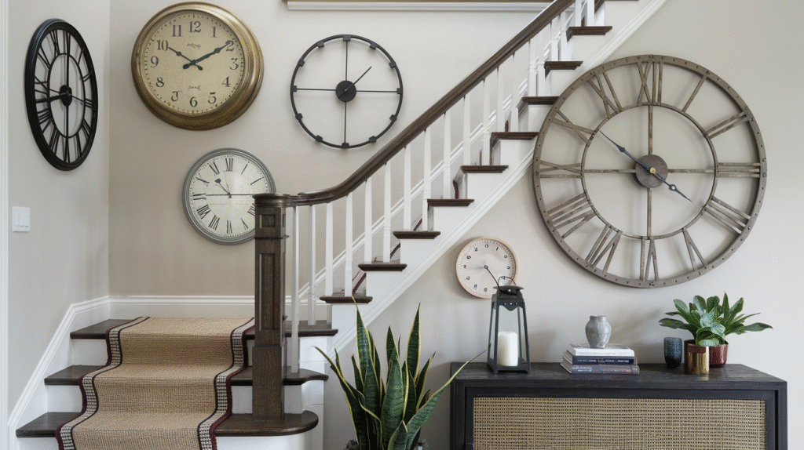
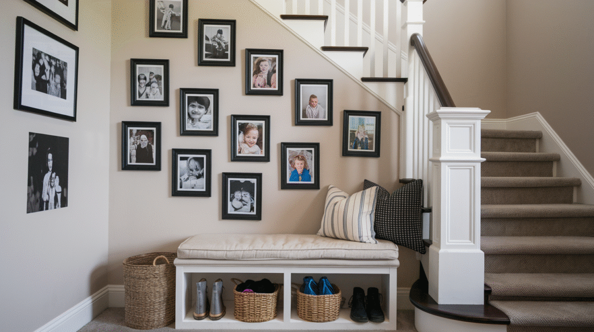
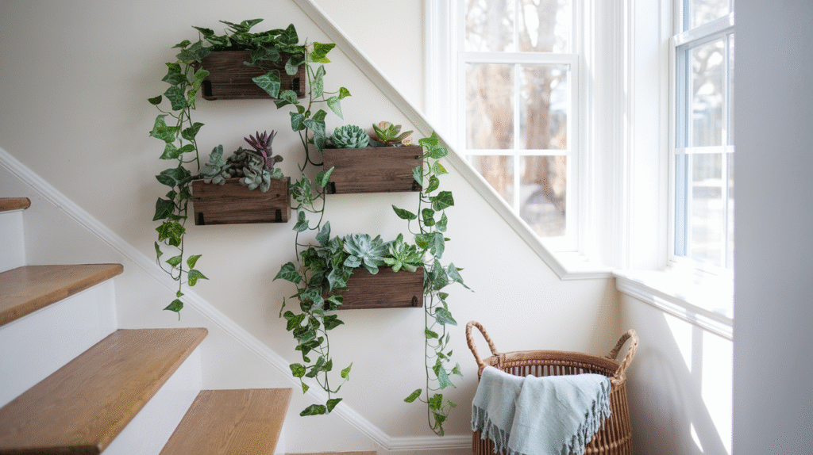
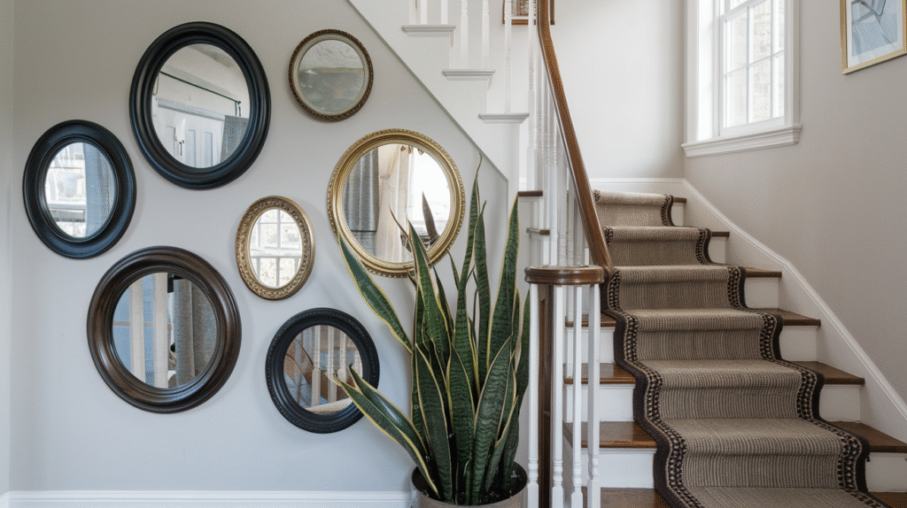
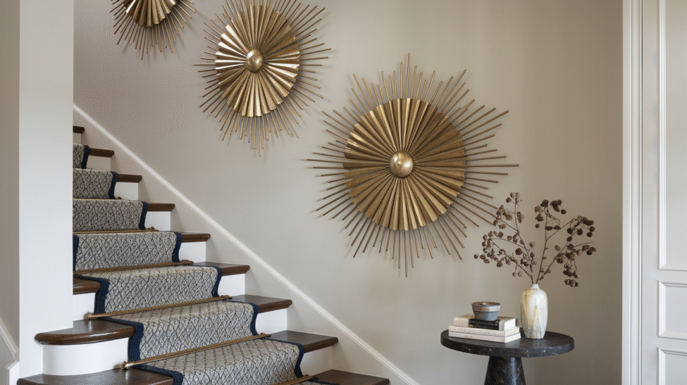
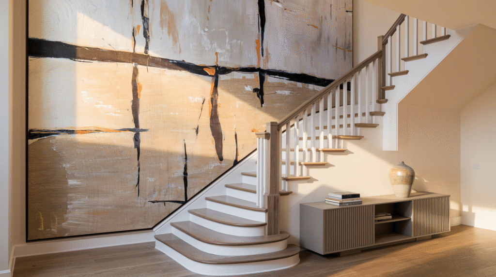
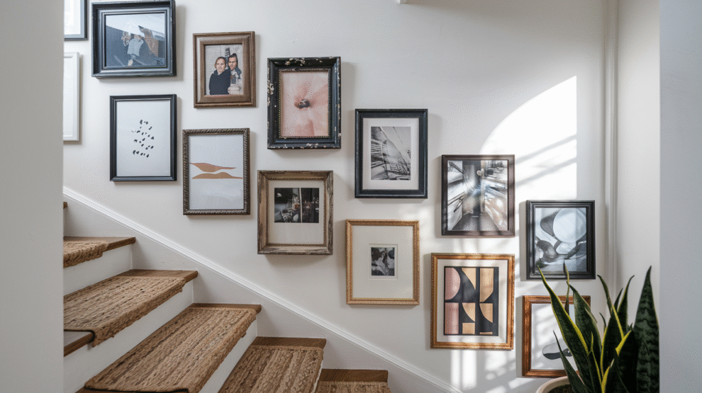
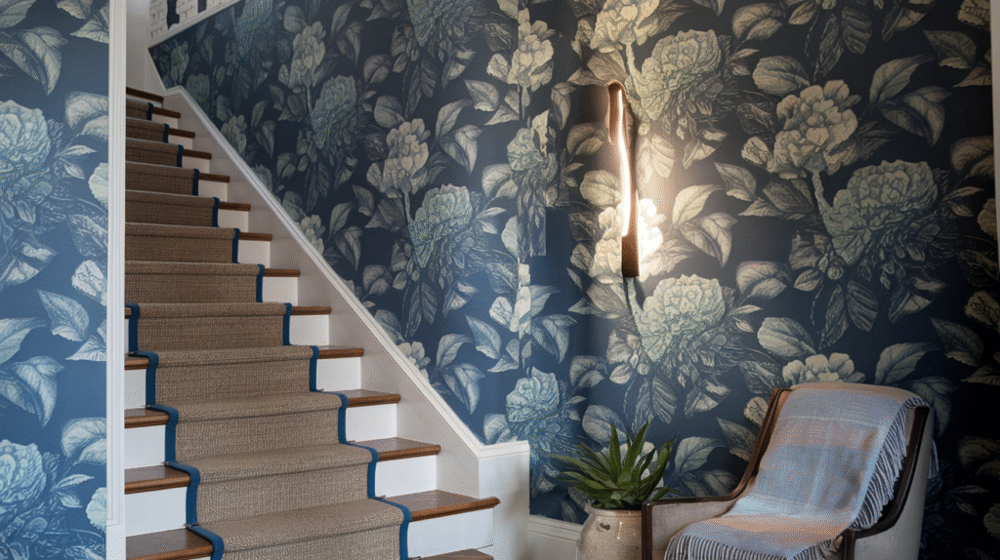
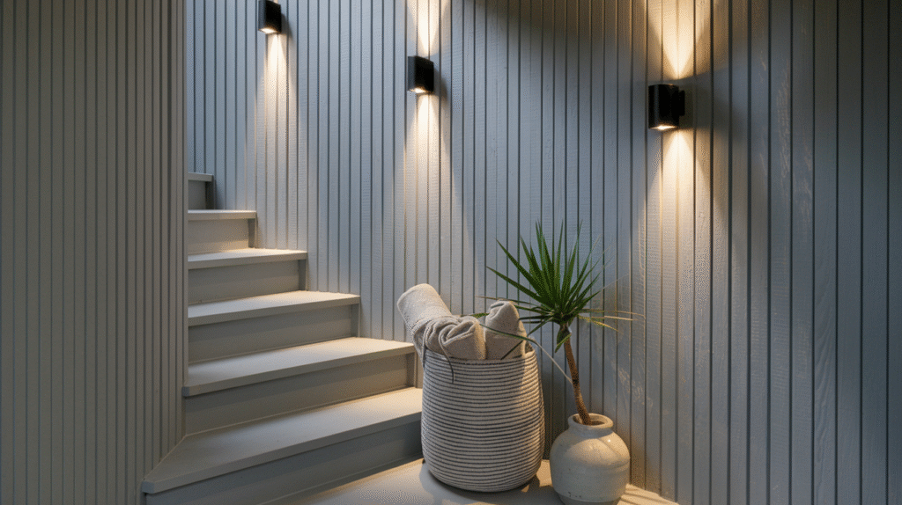

A staircase wall is one of the largest uninterrupted surfaces in most homes, and also one of the most commonly left bare.
It gets passed dozens of times a day, which makes it genuinely worth styling rather than leaving as an afterthought.

15 Staircase Wall Decor Ideas
1. A Built-In Book Nook
If the staircase has any depth to spare, a small built-in shelf or nook turns unused space into genuine storage and display.
This is the most structurally involved idea on this list, best planned alongside any broader staircase renovation.
2. A Mix of Clocks and Timepieces
A cluster of clocks in varying sizes and styles creates an eclectic, collected look that's genuinely distinctive.
This idea works best when the clocks actually function, adding genuine utility to what's otherwise purely decorative.

3. Inspirational Quotes or Typography
A single well-chosen phrase, in a considered font and placement, adds personality without requiring any art-curating skill.
This works best as one deliberate statement rather than several competing phrases on the same wall.
4. A Family Photo Timeline
Photos arranged chronologically up the stairs turn the daily walk up and down into something genuinely personal.
This works especially well in a home with kids, where the timeline naturally grows and updates over the years.

5. Statement Lighting
A dramatic pendant or a run of wall sconces along the staircase does double duty as both genuine function and a real design feature.
Stairwells often rely on a single distant overhead fixture, which makes this an upgrade most staircases genuinely need.
6. Floating Shelves
Shelves installed at an angle to match the stair's slope add display space in a spot that usually has none.
This works especially well for smaller framed photos, books, or collected objects that would get lost in a larger gallery arrangement.
7. A Vertical Garden Wall
A wall-mounted planting system or a cluster of hanging plants brings real greenery into a space that often has nowhere else for plants to go.
This is one of the more unexpected ideas on this list, and one of the most memorable for anyone visiting the home.

8. Mirrors
A mirror, or a cluster of smaller ones, bounces light up and down the stairwell, which is especially useful in a stairway that often gets less natural light than other rooms.
This also makes the stairwell feel less narrow, a genuine benefit in a space that's rarely generously sized.

9. Sculptural Wall Art
A dimensional, textured piece adds depth that flat art can't, catching light differently depending on the time of day and angle it's viewed from while walking the stairs.
This works well as a single statement piece rather than needing to be paired with anything else.

10. A Wall Mural or Custom Art
A mural, hand-painted or applied as a large-format print, turns the staircase into a genuinely unique feature that can't be replicated by hanging decor alone.
This is one of the more involved and expensive ideas on this list, best suited to someone fully committed to the specific design.
11. Oversized Statement Art
A single large piece, scaled to the wall's genuine size, makes more impact here than it would almost anywhere else in the home, simply because staircase walls tend to be unusually tall.
This works especially well for anyone who'd rather commit to one striking piece than curate a full gallery arrangement.

12. A Gallery Wall
A staircase's sloped wall is one of the most natural spots in the home for a gallery wall, since the ascending line naturally guides how pieces get arranged.
Planning the layout on the floor first, before any nails go in, matters even more here given the wall's awkward angle.

13. Accent Paint or Color Blocking
A bold color, or a deliberate color-blocked section, adds drama for a fraction of the cost and effort of wallpaper or paneling.
This is one of the lowest-commitment ways to test a bolder look before committing to something more permanent.
14. Wallpaper for Instant Drama
A bold wallpaper pattern transforms the staircase into a genuine design moment, especially effective given how much of the wall is typically visible at once along a stairway.
This works particularly well in a stairwell specifically because the scale of the space can handle a bolder pattern than a smaller room could.

15. A Textured Accent Wall
Shiplap, paneling, or a textured plaster finish on just the staircase wall gives it a distinct identity from the surrounding hallway.
This is a bigger commitment than most ideas on this list, but one that doesn't compete with anything else on the wall.

Your Staircase Wall Deserves Some Love
None of these 15 ideas need to happen at once.
Start with lighting or a gallery wall, since both deliver real impact without major structural work, then build from there as budget and ambition allow.
A styled staircase wall changes how the whole home feels to move through, not just how that one wall looks.